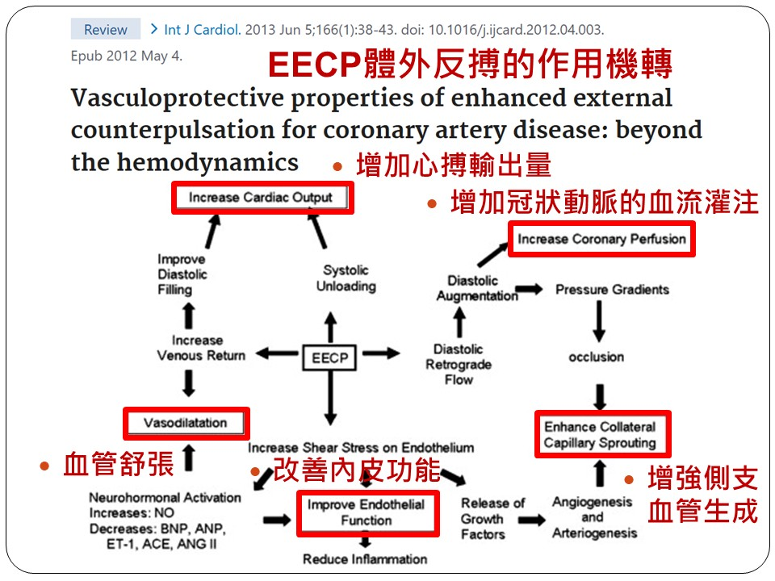
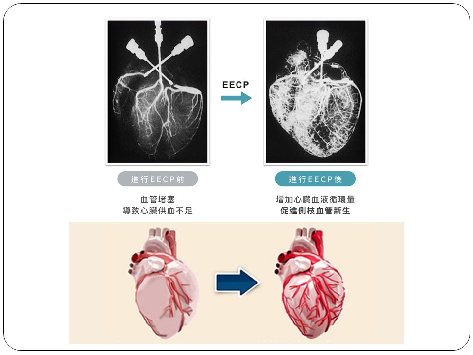

CY-Hung.github.io
KNDS (C) 1999-2025

| 洪振瀛醫師介紹 |
體外反搏治療（EECP）是一種非侵入性、無須手術或住院的門診心血管治療。其原理是利用心電圖同步技術，在心臟舒張期對下肢加壓，將血液推回心臟，如同「自然的繞道手術」，可有效促進血管新生、改善心肌缺血，相關國際論文實證資訊整理如下。
 
|
CY-Hung.github.io KNDS (C) 1999-2025 |
| |||
| ||||
體外反搏治療（EECP）是一種非侵入性、無須手術或住院的門診心血管治療。其原理是利用心電圖同步技術，在心臟舒張期對下肢加壓，將血液推回心臟，如同「自然的繞道手術」，可有效促進血管新生、改善心肌缺血，相關國際論文實證資訊整理如下。
  | ||||